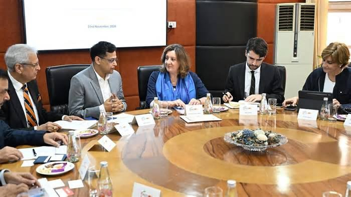

Una delegación de Castilla-La Mancha ha viajado a la India para captar inversiones de ese país

Su agenda de captación de inversiones se desarrolla con un encuentro de trabajo con la mayor organización empresarial del país, la Federación de Cámaras de Comercio e Industria de la India, que agluti ...
Su agenda de captación de inversiones se desarrolla con un encuentro de trabajo con la mayor organización empresarial del país, la Federación de Cámaras de Comercio e Industria de la India, que agluti ...
Noticia publicada por La Razón on MSN. Consulta el artículo original en La Razón on MSN para más información.